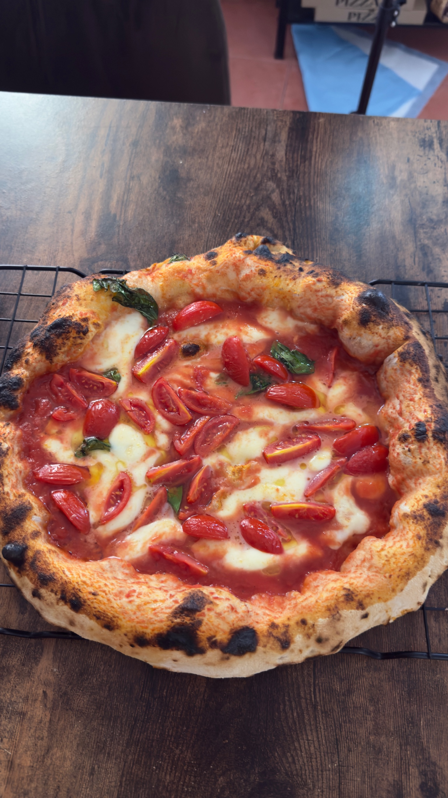

Si el tomate San Marzano es el alma de la pizza napolitana, la mozzarella fior di latte es su corazón. Es el ingrediente que más preguntas genera en los talleres de Inizio: ¿por qué no usas la mozzarella del supermercado? La respuesta cambia la forma en que entiendes la pizza.
¿Qué es la mozzarella fior di latte?
Fior di latte significa literalmente "flor de leche" en italiano. Es mozzarella fresca elaborada con leche de vaca —a diferencia de la mozzarella di bufala, que se hace con leche de búfala—, producida mediante el método tradicional de hilado en caliente (pasta filata).
El resultado es una mozzarella de sabor suave y ligeramente lácteo, con una textura elástica y fibrosa que, al fundirse en el horno a alta temperatura, se comporta de una forma completamente diferente a cualquier otra variedad de queso.
Fior di latte vs. mozzarella de supermercado: la diferencia técnica
La mozzarella que encuentras en la mayoría de supermercados españoles está pensada para ser conservada durante semanas y para aguantar el frío. Para conseguirlo, los productores añaden más suero, reguladores de acidez y conservantes. El resultado es una mozzarella que:
- Suelta mucha agua al hornearse, humedeciendo la masa
- No se funde uniformemente —se quema por fuera mientras el centro queda crudo
- Tiene un sabor neutro, casi sin carácter propio
- Se endurece al enfriarse, perdiendo su textura cremosa
La fior di latte italiana, especialmente la producida de forma artesanal en Campania o Agerola, hace exactamente lo contrario en el horno:
- Se funde de forma uniforme, creando esas manchas doradas características
- Suelta poca agua, la pizza mantiene la masa crujiente en el borde y tierna en el centro
- Aporta un sabor lácteo suave que complementa el San Marzano sin competir con él
- Al salir del horno, mantiene una textura cremosa y elástica que se estira al cortar
¿Por qué no búfala en la pizza horneada?
La mozzarella di bufala es extraordinaria —tiene más grasa, más sabor y una textura más cremosa— pero no está pensada para el horno. Su alto contenido en agua hace que suelte demasiado líquido a alta temperatura, aguando la salsa y humedeciendo la masa.
La solución que usan los mejores pizzaiolos napolitanos: añadir la búfala después del horneado, directamente sobre la pizza caliente. Así mantiene su frescura y su sabor sin arruinar la textura de la masa. Para la pizza horneada, la fior di latte es siempre la elección correcta.
Cómo se trabaja en el taller Inizio
En cada sesión de Inizio usamos fior di latte fresca, escurrida y cortada a mano en trozos irregulares. No rallada —nunca rallada. El truco está en la distribución: piezas irregulares crean zonas de fundido diferente, manchas doradas y partes más blancas que hacen la pizza visualmente más atractiva y más interesante en boca.
La cantidad también importa: menos de lo que crees. Una pizza napolitana no es una pizza cubierta de queso —el queso es un elemento más, no el protagonista. La proporción correcta permite que el tomate, la masa y el queso se complementen en lugar de que uno tape a los otros.
La trinidad de la pizza napolitana
Masa fermentada 24-48 horas. Tomate San Marzano DOP. Mozzarella fior di latte fresca. Estos tres elementos son la base de la pizza napolitana auténtica, y cada uno de ellos tiene una función específica que los otros dos no pueden cumplir.
Cuando los tres están en su mejor versión y se tratan con respeto —sin añadir nada que sobre, sin esconder nada con exceso de ingrediente— el resultado habla solo. Una pizza que no necesita explicación, que se entiende en el primer bocado.
Eso es lo que buscamos en Inizio. No solo que salga buena: que entiendas por qué es buena.
Trabaja con estos ingredientes en el taller
En Inizio montas tu pizza con San Marzano DOP, fior di latte fresca y harina profesional italiana. Aprende de verdad, con tus manos, en Madrid.
Reservar el taller